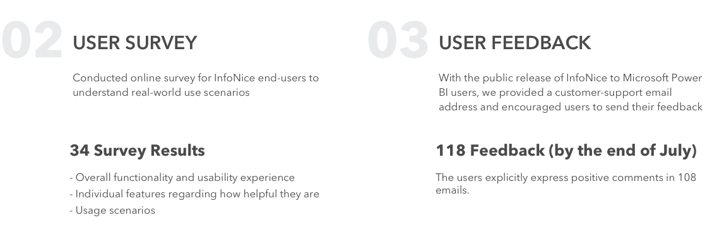

INTRODUCTION
At summer 2017, I had my UX internship at Software Analysis team at Microsoft Research Asia focusing on storytelling in data visualization. First project is about a visualization authoring tool for storytelling, and another is a hackathon project focusing on automatically providing insights behind data. Thank you to my mentors Haidong Zhang and Ray Huang for providing me the opportunity and guiding me all the time. Thank you to Yun Wang for being an awesome teammate.
INFONICE
OVERVIEW
Are you looking to tell a story with your data? Or have you ever wanted your charts and reports to be highly tailored to your specific topic? Take a look at our visualization design tool Infographic Designer released on Microsoft Office Store! Our project video is as below:


MY ROLE
Research
Participated in competitive analysis, problem space and find design implications.
Develop
Implemented multi-series bar/column charts with TypeScript.
Evaluation
Conducted comparative usability testing for 16 users, 35 online user survey and more than 100 real-world feedback. Completed quantitative and qualitative data analysis.
Paper Writing
Finished implementation and user study part of paper writing and crafted the images for paper. Our paper was published on CHI 2018!
PROCESS
Why information graphics but not plain charts?

Competitive Analysis
We did competitive analysis for different categories’ visualization tools. Based on the pros and cons of different categories, we summarized the issues for current solution and design implications for our tools


Design
As InfoNice is integrated in Power BI, any design like color, layout and format will try to be consistent with Power BI design.

Evaluation

Paper Writing
Finally, we summarized our findings in a paper 'InfoNice: Easy Creation of Information Graphics' which was published on CHI 2018! I finished paper writing of implementation and user study part and crafted following images for paper:

Others
As InfoNice has already ongoing for about two years, apart from releasing on Microsoft Office Store, it's really excited that our paper can be published on CHI 2018! It is an achievement for anyone who has worked on this project before. Thanks to Dongmei Zhang, Haidong Zhang, He Huang, Qiufeng Yin, Zhitao Hou, ...
Next, lets take a look at another project I did during my internship. It is an one-week hackathon project focusing on automatically providing insights behind data.
HACKTHON - INSIGHT EVOLUTION
OVERVIEW
Problem: Traditional Dashboarding need users monitoring metrics themselves. and provides an entry point to further drill-down analysis.
But under data intelligence, how to automatically recommend important data insights?
The system starts from ‘change detection’ to monitor the changes. And then analysis will be handled by ‘change explanation’ and ‘insight comparison’. Lastly, 'frequency analysis' will dig the knowledge in a more profound way.
So Insight Evolution consists of four core modules: Change Detection, Change Explanation, Insight Comparison, and Frequency analysis.
MY ROLE
For one-week Microsoft Hackathon, I designed and implemented one of the module - insight comparison module with TypeScript and C#.
Start from one chart, and select two objects you are interested in, then it will show you underlying differences in between.

DEMO
Let’s see a demo of how it works. Such as we’re gonna compare insights behind Ford and BMW’s sale data. After we select the two columns, it will cross connect with other dimensions of this car sale data and show insights that are different, same, unique to Ford or BMW.
Another example is to find insights behind Xbox 360 and Xbox One sales in North America. Insights Evolution finds that sports game selling well on both consoles.
OTHERS
Finally, our project presented at Hackathon and gained more cooperation opportunities with other teams. Thanks to my mentor Ray Huang to help me start with such a huge and complicate coding project. Also great thanks to my teammate Linxun Li. Our responsibility is that I'm responsible for front-end and he will focus on back-end of data analysis. Thanks for the effective and smooth cooperation!